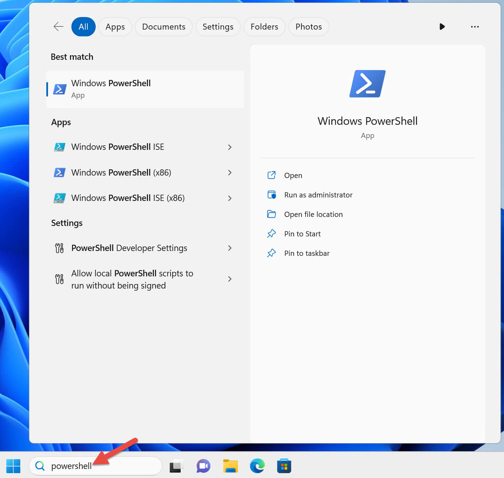
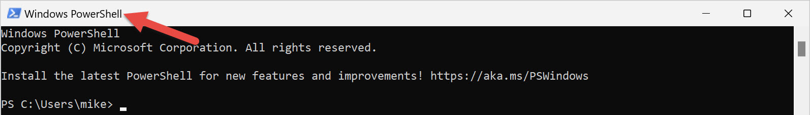
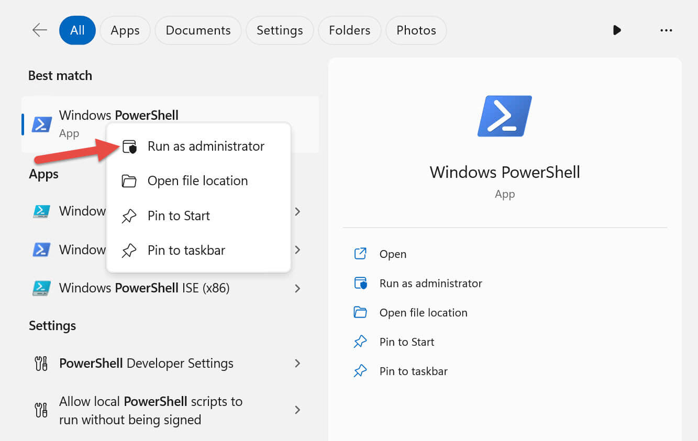
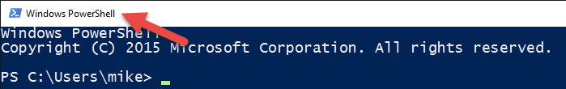
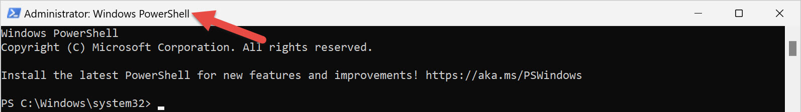
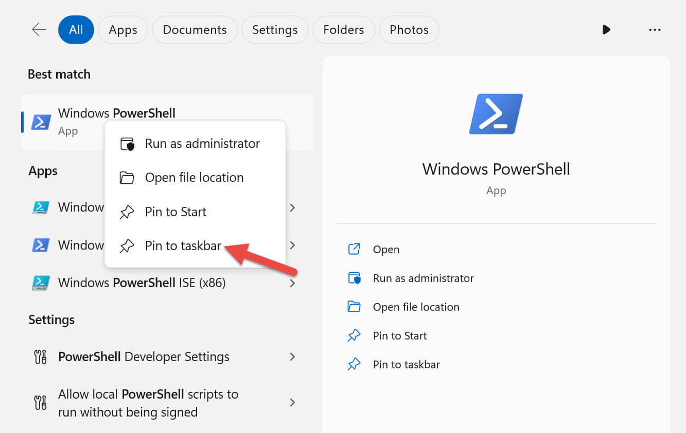
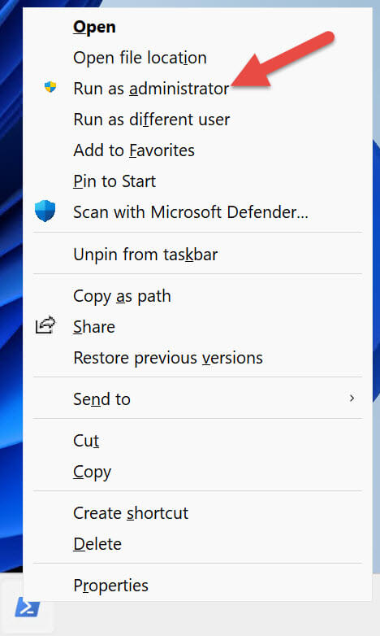

PowerShell（包括 Windows PowerShell 和 PowerShell Core）是微软公司开发的一个跨平台的命令行工具和脚本语言，它建立在.NET框架之上。与
PowerShell 由在 .NET Framework 和后来的 .NET 上构建的命令行界面壳层相关脚本语言组成，最初仅仅是 Windows 组件，后于 2016 年 8 月 18 日开源并提供跨平台支持。
PowerShell 是面向对象的，这意味着它处理的不是简单的文本，而是 .NET 对象。
PowerShell 适合需要高效管理 Windows 系统、自动化重复任务或与微软产品（如 Active Directory、Azure、Exchange 等）交互的技术人员，包括系统管理员、IT 运维、开发者和安全工程师。
PowerShell 的核心优势是将图形界面的点击操作转化为可复用的脚本命令，特别适合批量操作和定期任务。
普通用户若只需基本电脑操作则不必学习 PowerShell。
在 UNIX 世界，bash、zsh、sh 等命令行壳程序早已成为开发与运维人员的标配。然而，Windows 起初只有功能有限的 cmd.exe，缺乏脚本能力、模块化支持与对象处理能力。
PowerShell 的诞生正是为了补齐 Windows 系统在自动化和命令行控制上的短板，而现在，它已经脱离 Windows，成为了一个真正跨平台的自动化工具。
动词-名词 格式（如 Get-Process）。 ActiveDirectory 模块）。 Enter-PSSession 或 Invoke-Command 管理远程机器。 ls 替代 Get-ChildItem）。 Get-Help 和示例代码。 一句话总结：PowerShell 是面向对象的自动化工具，专为高效系统管理和跨平台任务设计。
在大多数人印象中，Windows 的命令行工具要么是年代久远的 cmd，要么是让人头秃的"图形界面点来点去"。但其实，微软早在 2006 年就推出了一款功能强大、专为系统管理员设计的现代命令行工具 —— PowerShell。
PowerShell 是微软推出的跨平台（Windows / Linux / macOS）自动化与配置管理框架，由「命令行外壳（host）」和「脚本语言」两部分组成。
PowerShell 基于 .NET（完整 .NET Framework 或 .NET Core / .NET 6+），因此能直接调用数以千计的 .NET API，并原生支持面向对象管道（object pipeline），而非传统 Shell 的纯文本流。
PowerShell 构建在 .NET Framework 之上，专为系统管理员和高级用户设计，用于自动化各种系统管理任务。
在 UNIX 系统里，像 bash、sh、csh 这些壳程序（Shell）早就是系统管理员的得力助手了。而 Windows 之前在这方面一直欠缺，直到 PowerShell 的出现，才算是补上了这块短板。它不仅能像 UNIX Shell 一样执行命令，还集成了脚本语言和各种辅助工具，自动化能力更上一层楼。
| 年份 | 版本 | 关键里程碑 |
|---|---|---|
| 2006 | PowerShell 1.0 | 随 Windows Vista 推出，首次登场 |
| 2009 | PowerShell 2.0 | 引入 Remoting（远程控制）、模块支持、后台任务 |
| 2012 | PowerShell 3.0 | 增加 Workflow、计划任务、CIM 等特性 |
| 2016 | PowerShell 5.1 | 内置于 Windows 10，是最后一代基于 .NET Framework 的版本 |
| 2018 | PowerShell Core 6.0 | 正式开源，全面跨平台，迁移到 GitHub |
| 2020 | PowerShell 7.0 | 基于 .NET Core 3.1，首次支持与 Windows PowerShell 并存 |
| 2023 | PowerShell 7.4 | 基于 .NET 8，性能与兼容性持续提升，支持原生容器场景 |
| 对比项 | PowerShell | 传统命令行（Bash / CMD） |
|---|---|---|
| 数据类型 | 对象（.NET 对象） | 字符串 / 文本 |
| 管道传输 | 传递对象 | 传递文本 |
| 命令风格 | 动词-名词（如 Get-Process） |
简短命令（如 ps、ls） |
| 脚本能力 | 完整编程语言（支持函数、类、异常） | 简单脚本语法 |
| 错误处理 | try-catch 异常机制 |
基于退出码 $?、$LASTEXITCODE |
| 模块系统 | 原生支持，支持版本控制与自动加载 | 依赖外部命令或源码导入 |
| 远程执行 | 内置 Remoting、SSH | Bash 依赖 ssh、expect 等，CMD 不支持 |
| 资源访问 | 支持多种 Provider（注册表、变量、证书等） | 主要操作文件系统 |
| 跨平台 | 是（PowerShell Core / 7+） | Bash 是，CMD 否 |
| 扩展性 | 可调用 .NET / 自定义 Cmdlet | 依赖第三方命令行工具 |
| 输出处理 | 结构化对象处理、管道链条操作 | 纯文本需用 grep / awk 等解析 |
PowerShell 不只是一个命令行工具，它更像是一种高级自动化平台。不论你是运维人员、开发者，还是想精通 Windows 系统的普通用户，PowerShell 都值得你深入了解和掌握。
它比 cmd 灵活，比 bash 强大，最关键的是——它正在以跨平台的姿态，成为新时代的自动化基础设施工具。
PowerShell 自从 6.0 起实现了完全开源和跨平台（PowerShell Core / PowerShell 7+），可运行于 Windows、Linux 和 macOS。
.msi 安装包适用于 Windows 10/11 且安装了 Windows 包管理器：
winget install --id Microsoft.Powershell --source winget
可选参数：--silent 表示静默安装，--version 7.4.1 可指定版本
# 安装依赖 sudo apt update sudo apt install -y wget apt-transport-https software-properties-common # 导入微软 GPG 密钥 wget -q https://packages.microsoft.com/config/ubuntu/22.04/packages-microsoft-prod.deb sudo dpkg -i packages-microsoft-prod.deb # 安装 PowerShell sudo apt update sudo apt install -y powershell
启动 PowerShell：
pwsh
# 添加 Microsoft YUM 源 sudo dnf install -y https://packages.microsoft.com/config/rhel/8/packages-microsoft-prod.rpm # 安装 PowerShell sudo dnf install -y powershell
或 CentOS 7 使用 yum：
sudo yum install -y powershell
sudo pacman -S powershell
如果找不到，可使用 AUR 包管理器（如
yay）
brew install --cask powershell
启动 PowerShell：
pwsh
.pkg 安装文件（如 powershell-7.4.1-osx-x64.pkg）pwsh --version
| 平台 | 卸载方式 |
|---|---|
| Windows | 控制面板 → 程序与功能 → 卸载 PowerShell 7 |
| Ubuntu | sudo apt remove powershell |
| CentOS | sudo yum remove powershell |
| macOS（brew） | brew uninstall powershell |
| 平台 | 命令 |
|---|---|
| Windows | pwsh.exe 或开始菜单搜索 "PowerShell 7" |
| Linux | pwsh |
| macOS | pwsh |
PowerShell 不只是一个命令行工具，它的设计理念、功能架构和使用方式与传统 Shell 有着显著区别。
Cmdlet（发音为 command-let）是 PowerShell 中最基本的命令单元，它们都是基于 .NET 的类，运行后会返回一个或多个 .NET 对象。
每个 Cmdlet 都遵循 动词-名词 命名规范，例如：
| Cmdlet | 含义 |
|---|---|
Get-Process |
获取进程信息 |
Set-Item |
设置某个资源项的值 |
Remove-Item |
删除文件、注册表项等 |
New-User |
创建新用户（若安装了 AD 模块） |
PowerShell 附带了数百个 Cmdlet，且第三方模块可以自定义更多。
Get-Service Get-ChildItem -Path C:\Windows
你也可以使用 Get-Command 查看所有可用的 Cmdlet：
Get-Command -CommandType Cmdlet
在传统 Shell 中，管道 (|) 传递的是文本字符串。而在 PowerShell 中，管道传递的是完整的 .NET 对象。
这就意味着你可以保留结构化数据（属性、方法）进行后续处理。
Get-Process | Where-Object { $_.CPU -gt 100 } | Select-Object Name, CPU
上述命令中：
Get-Process 获取所有进程（返回对象）Where-Object 过滤 CPU 使用率大于 100 的进程Select-Object 只输出 Name 和 CPU 字段你不需要使用 awk、cut、grep 等工具去"解析"输出，而是直接操作对象属性。
PowerShell 提供了一种统一的资源访问方式：Provider 模型，它把各种资源映射为虚拟驱动器（PSDrive），就像 C: 盘一样操作。
| Provider | 示例驱动器 | 说明 |
|---|---|---|
| FileSystem | C:, D: |
本地文件系统 |
| Registry | HKLM:, HKCU: |
Windows 注册表 |
| Environment | Env: |
环境变量 |
| Certificate | Cert: |
证书存储 |
| Function | Function: |
当前会话中的函数 |
| Variable | Variable: |
当前定义的变量 |
| Alias | Alias: |
命令别名 |
Get-ChildItem HKLM:\Software\Microsoft
就像浏览文件夹一样浏览注册表。
.ps1 为扩展名的文本文件模块是 PowerShell 中用于复用的功能单元，它可以是：
.psm1 文件（模块脚本）.psd1 清单的文件夹（高级模块）模块可支持：
查看系统中所有模块：
Get-Module -ListAvailable
导入模块：
Import-Module Az
为了防止恶意脚本执行，PowerShell 引入了 执行策略（Execution Policy），它限制 .ps1 脚本文件的执行行为。
| 策略 | 含义 |
|---|---|
| Restricted | 默认，不允许运行任何脚本 |
| RemoteSigned | 允许本地脚本运行，远程脚本需签名 |
| AllSigned | 所有脚本都需签名 |
| Bypass | 无限制，不建议在生产中使用 |
Set-ExecutionPolicy RemoteSigned -Scope CurrentUser
⚠️ 注意：执行策略只影响脚本文件，不限制手动输入的命令。
PowerShell Remoting 支持通过 WS-MAN（基于 WinRM） 或 SSH 协议，远程连接到另一台计算机并执行命令。
Enable-PSRemoting -Force
# 建立远程会话
Enter-PSSession -ComputerName Server01
# 批量执行命令
Invoke-Command -ComputerName Server01,Server02 -ScriptBlock { Get-Service }
Enter-PSSession -HostName linux01 -User user1 -SSHTransport
DSC（Desired State Configuration）是 PowerShell 的声明式配置平台，用于定义系统的"理想状态"。
它允许你：
.ps1）DSC 特别适用于大规模服务器配置、合规检查和自动化部署。
PowerShell 提供了丰富的帮助系统，让你可以轻松探索命令：
Get-Help Get-Process：查看命令帮助Get-Command：列出所有命令Get-Member：查看对象属性与方法Get-Help about_*：查看内置知识文档（如 about_Execution_Policies）Get-Process | Get-Member
| 概念 | 关键词 | 简述 | |
|---|---|---|---|
| Cmdlet | 动词-名词 |
最小执行单元，基于 .NET | |
| 管道 | ` | ` | 对象而非文本传递 |
| Provider | FileSystem, Env: |
统一访问各类资源 | |
| 模块 | .psm1, .psd1 |
组织可重用命令集合 | |
| 执行策略 | Set-ExecutionPolicy |
控制脚本运行权限 | |
| 远程管理 | Enter-PSSession |
远程执行命令 | |
| DSC | Configuration |
声明式系统配置平台 | |
| 帮助系统 | Get-Help |
自带文档系统 |
PowerShell 是微软为 Windows 系统打造的一种命令行壳程序 + 脚本环境，主要用于系统管理与自动化任务。
在 Windows 11 中，直接在开始菜单搜索 PowerShell 即可。

常见的快捷方式包括（如为 64 位系统）：
| 快捷方式名称 | 说明 |
|---|---|
| Windows PowerShell | 64 位命令行版 |
| Windows PowerShell ISE | 64 位图形脚本编辑器 |
| Windows PowerShell (x86) | 32 位命令行版 |
| Windows PowerShell ISE (x86) | 32 位图形脚本编辑器 |
⚠️ 注意：Windows 11 本身不支持 32 位系统，但仍包含 x86 的 PowerShell 版本以兼容旧程序。
单击 Windows PowerShell 快捷方式启动 PowerShell 控制台。
PowerShell 控制台的标题栏会显示 "Windows PowerShell"。

注意：某些命令在以普通用户身份运行 PowerShell 时可以正常运行，但 PowerShell 本身不参与用户访问控制（UAC），无法提示用户提升权限。
UAC 作用：Windows 安全功能，防止恶意代码以提升权限运行。
普通用户权限限制：当以普通用户身份运行时，尝试执行需要管理员权限的命令会报错。
例如停止 Windows 服务：
Stop-Service -Name W32Time
报错信息示例：
Stop-Service : Service 'Windows Time (W32Time)' cannot be stopped due to
the following error: Cannot open W32Time service on computer '.'.
At line:1 char:1
+ Stop-Service -Name W32Time
+ ~~~~~~~~~~~~~~~~~~~~~~~~~~
+ CategoryInfo : CloseError: (System.ServiceProcess.ServiceCon
troller:ServiceController) [Stop-Service], ServiceCommandException
+ FullyQualifiedErrorId : CouldNotStopService,Microsoft.PowerShell.Comm
ands.StopServiceCommand
解决方案：需要使用提升为本地管理员权限的用户运行 PowerShell。
配置了第二个域用户帐户，符合最小权限原则，不是域管理员且无域内提升权限。
操作步骤：

系统提示：由于当前以普通用户登录，Windows 会提示输入本地管理员用户凭据。

确认提升：提升后的 PowerShell 窗口标题栏显示"管理员：Windows PowerShell"。

效果：在提升的 PowerShell 中运行需要管理员权限的命令，不再遇到 UAC 错误。
权限提升原则：只有在绝对必要时才应以管理员身份提升 PowerShell。
远程计算机：面向远程计算机时，无需提升 PowerShell 权限。提升权限只影响本地命令。
固定快捷方式：可将 PowerShell 或 Windows 终端快捷方式固定到任务栏，方便启动：

安全启动提升的 PowerShell：如果需要提升权限启动 PowerShell，可按住 Shift 键，同时右键点击任务栏上固定的 PowerShell 图标，选择"以管理员身份运行"

PowerShell 提供自动变量 $PSVersionTable，包含当前 PowerShell 会话的版本和相关信息。
$PSVersionTable
输出结果类似如下：
Name Value
---- -----
PSVersion 5.1.22621.2428
PSEdition Desktop
PSCompatibleVersions {1.0, 2.0, 3.0, 4.0...}
BuildVersion 10.0.22621.2428
CLRVersion 4.0.30319.42000
WSManStackVersion 3.0
PSRemotingProtocolVersion 2.3
SerializationVersion 1.1.0.1
执行策略是 PowerShell 的安全功能，用于控制脚本运行条件，防止无意执行恶意脚本。
注意：执行策略不是安全边界，熟练用户可绕过。
| 操作系统版本 | 默认执行策略 |
|---|---|
| Windows Server 2022 | RemoteSigned |
| Windows Server 2019 | RemoteSigned |
| Windows Server 2016 | RemoteSigned |
| Windows 11 | Restricted |
| Windows 10 | Restricted |
Restricted 表示默认不允许执行任何脚本。
查询当前策略：
Get-ExecutionPolicy
输出结果类似如下：
Restricted
列出所有范围的执行策略设置：
Get-ExecutionPolicy -List
输出类似如下：
Scope ExecutionPolicy
----- ---------------
MachinePolicy Undefined
UserPolicy Undefined
Process Undefined
CurrentUser Undefined
LocalMachine Undefined
假设有脚本文件 Get-TimeService.ps1，直接在交互式命令行运行该命令正常：
Get-Service -Name W32Time
但是，从脚本中运行相同的命令时，PowerShell 将返回错误。
.\Get-TimeService.ps1
错误信息：
.\Get-TimeService.ps1 : File C:\tmp\Get-TimeService.ps1 cannot be loaded
because running scripts is disabled on this system. For more information,
see about_Execution_Policies at
https:/go.microsoft.com/fwlink/?LinkID=135170.
At line:1 char:1
+ .\Get-TimeService.ps1
+ ~~~~~~~~~~~~~~~~~~~~~
+ CategoryInfo : SecurityError: (:) [], PSSecurityException
+ FullyQualifiedErrorId : UnauthorizedAccess
允许运行本地脚本和受信任发布者签名的远程脚本。
Set-ExecutionPolicy -ExecutionPolicy RemoteSigned
Do you want to change the execution policy? [Y] Yes [A] Yes to All ...
Set-ExecutionPolicy -ExecutionPolicy RemoteSigned -Scope CurrentUser
未提升管理员权限修改 LocalMachine 策略时错误：
Access to the registry key 'HKEY_LOCAL_MACHINE\SOFTWARE\Microsoft\PowerShell\1\ShellIds\Microsoft.PowerShell' is denied.
解决方案：以管理员身份运行 PowerShell 后重试，或只修改当前用户策略。
执行策略修改为 RemoteSigned 后，运行脚本：
.\Get-TimeService.ps1
输出结果：
Status Name DisplayName ------ ---- ----------- Running W32Time Windows Time
.ps1。about_Execution_Policies 了解相关安全风险。PowerShell 与传统命令行（如 CMD 或 Bash）最大的区别在于：PowerShell 的命令输出是对象，而不是纯文本。
PowerShell 比起传统命令行更加灵活、强大，也让脚本编写和系统管理更加高效。
在传统命令行中，命令之间通过管道 | 传递的是字符串文本，要想进一步处理这些文本，通常需要借助 grep、awk、sed 等工具。
而在 PowerShell 中，命令之间通过管道传递的是对象，可以直接访问对象的属性和方法，无需解析文本，大大提高了准确性和开发效率。
以 Get-Process 命令为例：
Get-Process
该命令用于获取当前系统中运行的进程列表。
Get-Process 命令返回的并不是纯文本表格，而是一组 .NET 对象，每个进程是一个 System.Diagnostics.Process 类型的对象。
我们可以像访问编程语言中的对象那样访问其属性，例如：
(Get-Process)[0].Name
上述命令表示获取第一个进程的名称，输出示例：
explorer
要深入理解对象，关键在于掌握它有哪些属性和方法。PowerShell 提供了 Get-Member 命令来帮助我们探索对象结构：
Get-Process | Get-Member
部分输出示例：
Name MemberType Definition
---- ---------- ----------
Id Property int Id {get;}
Name Property string Name {get;}
Kill Method void Kill()
Start Method void Start()
说明：
Property 表示对象的属性，如 Id、NameMethod 表示对象的方法，如 Kill()、Start()你可以通过 对象.属性 或 对象.方法() 的形式使用这些成员。
在 PowerShell 中，多个命令通过 | 连接时，传递的是对象而非文本。
这意味着你可以在后续命令中直接访问前一个命令传递的对象属性。
示例：筛选所有状态为 Running 的服务：
Get-Service | Where-Object { $_.Status -eq 'Running' }
解释：
$_ 表示当前管道中的对象Status 是服务对象的一个属性PowerShell 提供了一系列用于操作对象的内置命令，常用于筛选、排序、分组、导出等场景：
| 命令 | 作用说明 |
|---|---|
Where-Object |
条件筛选对象 |
Select-Object |
选择或重命名对象属性 |
Sort-Object |
根据某个属性对对象排序 |
Group-Object |
按属性对对象进行分组统计 |
Measure-Object |
统计对象数量、总和、平均等 |
Export-Csv |
将对象导出为 CSV 文件 |
ConvertTo-Json |
将对象转换为 JSON 格式字符串 |
Get-Process | Select-Object Name, Id, CPU
该命令提取每个进程的名称、ID 和 CPU 使用情况。
你可以通过脚本块添加自定义属性：
Get-Process | Select-Object Name, @{Name="MemoryMB";Expression={$_.WorkingSet / 1MB -as [int]}}
说明：
@{} 创建一个哈希表定义新属性Name 指定新列名称Expression 提供计算逻辑Get-Process | Sort-Object CPU -Descending
Get-Service | Group-Object Status
输出示例：
Count Name Group
----- ---- -----
75 Running {WinDefend, WSearch, ...}
35 Stopped {Fax, Spooler, ...}
Get-Service | Select-Object Name, Status | Export-Csv -Path services.csv -NoTypeInformation
Get-Service | ConvertTo-Json
这些格式便于与其他系统或 API 进行集成，是自动化工作流的重要部分。
Get-Process | Sort-Object CPU -Descending | Select-Object -First 5 Name, CPU
Get-Service | Group-Object Status | Select-Object Name, Count
PowerShell 的面向对象特性，使得命令行操作更符合程序设计思维。通过对象的属性和方法，用户可以更精准地操作系统资源，构建更强大和可靠的自动化脚本。
初学者建议从以下几个方面入手巩固：
Get-Member 探索对象结构Where-Object 和 Select-Object 的用法Group-Object、Sort-Object 处理数据Cmdlet（发音类似 "command-let"） 是 PowerShell 中的基本命令单元，由 Microsoft 基于 .NET 框架实现的小型命令。
Cmdlet 不同于传统 shell 中的外部程序，例如 .exe 或 .bat 文件，而是内置于 PowerShell 运行时环境中的。
每个 Cmdlet 执行一项特定的任务，比如获取数据、设置属性、创建对象、导出文件等。
PowerShell 中所有 Cmdlet 的命名都遵循统一的 "动词-名词" 格式，例如：
Get-Process：获取进程信息Set-Date：设置系统日期New-Item：创建新项（如文件或文件夹）Remove-Service：删除服务这种命名方式既直观又一致，便于记忆和查找。
Cmdlet 的语法结构一般如下：
动词-名词 [-参数名 参数值] [-开关参数]示例：
Get-Service -Name W32Time
说明：
Get-Service：获取服务对象-Name W32Time：指定要查询的服务名称为 W32Time再如：
Stop-Process -Id 1234 -Force
-Id 是带值参数-Force 是开关参数，不需要指定值Cmdlet 支持位置参数、命名参数和管道输入。这使得命令可以灵活组合，构建复杂的工作流。
示例 1：指定参数形式
Get-Process -Name notepad
示例 2：通过管道传递
"notepad" | Get-Process -Name
示例 3：对象管道传递给另一个 Cmdlet
Get-Process notepad | Stop-Process
在上面这个例子中，Get-Process 获取了 notepad 进程对象，然后通过管道传递给 Stop-Process 来终止它。
PowerShell 提供了完整的帮助系统，可以使用 Get-Help 查看任何 Cmdlet 的用法：
Get-Help Get-Process
要查看更多参数说明和示例，可加上 -Detailed 或 -Examples：
Get-Help Get-Process -Examples
如果是首次使用 PowerShell，建议执行一次以下命令来更新本地帮助：
Update-Help
| Cmdlet | 功能说明 |
|---|---|
Get-Command |
查看所有可用命令 |
Get-Help |
查看命令的帮助信息 |
Get-Process |
获取进程列表 |
Get-Service |
获取服务列表 |
Start-Service |
启动服务 |
Stop-Service |
停止服务 |
Set-ExecutionPolicy |
设置执行策略 |
New-Item |
创建新文件或文件夹 |
Remove-Item |
删除文件或文件夹 |
Copy-Item |
复制文件或文件夹 |
Move-Item |
移动文件或文件夹 |
Clear-Host |
清屏，类似于 cls |
创建文件夹：
New-Item -Path "C:\TestFolder" -ItemType Directory
在该目录下创建文本文件：
New-Item -Path "C:\TestFolder\demo.txt" -ItemType File
将内容写入文件：
Set-Content -Path "C:\TestFolder\demo.txt" -Value "Hello PowerShell"
读取文件内容：
Get-Content -Path "C:\TestFolder\demo.txt"
建议初学者从以下方面着手练习：
Get-Command 探索所有可用命令Get-Help 学会查阅命令用法New-Item 和 Get-Content 等命令进行本地文件操作PowerShell 不只是一个命令行工具，它还是一个完整的脚本语言。学习它的基本语法，就像学习一门新的编程语言一样，是入门的重要一步。
本节将详细介绍 PowerShell 中最基本的语法元素，包括变量、注释、数据类型、运算符、条件判断、循环结构等内容，为后续编写脚本打下扎实基础。
PowerShell 中的注释与大多数编程语言相似，用于解释代码，不会被执行。
单行注释使用 # 开头：
# 这是一个单行注释 Write-Output "Hello, PowerShell"
多行注释使用 <# 和 #> 包裹：
<# 这是多行注释 可用于文档说明 #>
PowerShell 中变量以 $ 符号开头，无需事先声明类型：
$name = "Alice" $age = 25
Write-Output "Name: $name"
也可以使用字符串插值：
Write-Output "User: $($name), Age: $($age)"
PowerShell 是弱类型语言，但变量背后都有对应的 .NET 类型。
| 类型 | 示例 |
|---|---|
| 字符串 | $str = "Hello" |
| 整数 | $num = 123 |
| 小数 | $pi = 3.14 |
| 布尔值 | $isTrue = $true |
| 数组 | $arr = @(1, 2, 3) |
| 哈希表 | $h = @{Name="Tom"; Age=30} |
可以使用 .GetType() 查看变量类型：
$str.GetType().Name # String
| 类别 | 示例 | 说明 |
|---|---|---|
| 算术运算 | + - * / % |
常见数学运算 |
| 比较运算 | -eq -ne -lt -gt |
等于、不等于、小于、大于 |
| 逻辑运算 | -and -or -not |
逻辑运算符 |
| 字符串 | -like -match -replace |
模式匹配和替换 |
| 包含运算 | -in -contains |
集合判断 |
示例：
5 -eq 5 # True "abc" -like "a*" # True
if ($age -ge 18) {
Write-Output "成年人"
} else {
Write-Output "未成年人"
}
if ($score -ge 90) {
"优秀"
} elseif ($score -ge 60) {
"及格"
} else {
"不及格"
}
for ($i = 1; $i -le 5; $i++) {
Write-Output "第 $i 次循环"
}
$colors = @("Red", "Green", "Blue")
foreach ($color in $colors) {
Write-Output "颜色：$color"
}
$count = 0
while ($count -lt 3) {
Write-Output $count
$count++
}
PowerShell 允许自定义函数，语法如下：
function Say-Hello {
param([string]$name)
Write-Output "Hello, $name!"
}
Say-Hello -name "PowerShell"
也可以使用简洁写法：
function Square($x) { return $x * $x }
Square 5 # 输出 25
使用 try {} catch {} 块来处理可能出错的语句：
try {
Get-Item "C:\NotExist.txt"
} catch {
Write-Output "找不到文件"
}
PowerShell 脚本文件使用 .ps1 后缀名。可以使用 VS Code 或记事本创建：
# hello.ps1 $name = "World" Write-Output "Hello, $name"
在 PowerShell 中运行：
.\hello.ps1
注意：如果脚本未能执行，请检查执行策略（
Get-ExecutionPolicy），必要时使用Set-ExecutionPolicy允许运行脚本。
文件系统操作是 PowerShell 中最常见、最实用的任务之一。
从创建、复制、移动、删除文件，到获取文件属性、批量处理目录结构，PowerShell 提供了大量简洁而强大的 Cmdlet 来完成这些操作。
Get-ChildItemGet-ChildItem
这是 PowerShell 中查看目录内容（相当于 ls 或 dir）的命令。默认列出当前目录下的所有文件和子目录。
你也可以使用路径参数：
Get-ChildItem -Path C:\Test
查看所有子目录（递归）：
Get-ChildItem -Path C:\Test -Recurse
按文件类型筛选：
Get-ChildItem -Path C:\Test -Filter *.txt
New-Item创建新目录：
New-Item -Path "C:\Demo" -ItemType Directory
创建新文件：
New-Item -Path "C:\Demo\example.txt" -ItemType File
提示：如路径中父目录不存在，将报错。需先手动或脚本创建上级目录。
Copy-Item 和 Move-Item复制文件：
Copy-Item -Path "C:\Demo\example.txt" -Destination "D:\Backup"
复制整个文件夹（包含内容）：
Copy-Item -Path "C:\Demo" -Destination "D:\Backup" -Recurse
移动文件：
Move-Item -Path "C:\Demo\example.txt" -Destination "C:\Demo2"
Remove-Item删除文件：
Remove-Item -Path "C:\Demo\example.txt"
删除文件夹及其内容：
Remove-Item -Path "C:\Demo" -Recurse -Force
说明：
-Recurse：删除目录下的所有内容-Force：强制删除隐藏或只读文件Get-Content / Set-Content / Add-Content读取文件内容：
Get-Content -Path "C:\Demo\example.txt"
写入内容（覆盖）：
Set-Content -Path "C:\Demo\example.txt" -Value "Hello PowerShell"
追加内容：
Add-Content -Path "C:\Demo\example.txt" -Value "Another line"
重命名文件：
Rename-Item -Path "C:\Demo\example.txt" -NewName "renamed.txt"
判断文件是否存在：
Test-Path -Path "C:\Demo\renamed.txt"
如果存在返回 True，否则返回 False。
Get-Item$item = Get-Item -Path "C:\Demo\renamed.txt" $item.Length # 文件大小（字节） $item.CreationTime # 创建时间 $item.Extension # 扩展名
注意：返回的是
System.IO.FileInfo类型对象，可进一步使用对象属性。
.log 文件大小总和：Get-ChildItem -Path "C:\Logs" -Filter *.log | Measure-Object -Property Length -Sum
输出结果示例：
Count : 15 Sum : 1289345 Property : Length
将所有 .txt 文件内容追加到一个新文件中：
Get-ChildItem -Path "C:\TextFiles" -Filter *.txt | ForEach-Object {
Get-Content $_.FullName | Add-Content -Path "C:\AllText.txt"
}
| 问题 | 说明 |
|---|---|
| 路径中包含空格 | 使用引号 " 括起来整个路径字符串 |
| 区分目录和文件 | New-Item 必须指定 -ItemType File 或 Directory |
| 文件不存在时操作报错 | 使用 Test-Path 检查再处理 |
| 删除命令需小心 | Remove-Item 使用 -Recurse 时慎重，避免误删 |
PowerShell 在文件系统操作方面表现非常强大，具备以下优势：
建议学习方式：
New-Item、Remove-Item、Copy-Item、Get-Content、Set-Content进程和服务的管理，是系统维护和自动化运维中非常重要的一部分。
PowerShell 提供了一组简洁而强大的 Cmdlet，用于查看、启动、停止、筛选和控制本地（或远程）计算机上的进程与服务。
本节将详细讲解如何使用 PowerShell 管理进程与服务，包括基本操作命令、典型应用场景及常见问题，帮助你提升系统管理效率。
PowerShell 使用 .NET 的进程对象来处理进程操作，常用的 Cmdlet 包括：
| Cmdlet | 功能 |
|---|---|
Get-Process |
获取正在运行的进程 |
Stop-Process |
停止指定进程 |
Start-Process |
启动新进程（程序） |
Wait-Process |
等待某个进程结束 |
Get-Process查看所有正在运行的进程：
Get-Process
查看特定进程（如 notepad）：
Get-Process -Name notepad
查看多个进程：
Get-Process -Name chrome, notepad
获取进程详细信息并排序：
Get-Process | Sort-Object CPU -Descending | Select-Object -First 5Stop-Process
根据进程名停止：
Stop-Process -Name notepad
根据进程 ID 停止：
Stop-Process -Id 1234
强制终止进程（避免交互提示）：
Stop-Process -Name notepad -Force
Start-Process打开记事本：
Start-Process notepad
以管理员身份打开 PowerShell（需当前窗口有权限）：
Start-Process powershell -Verb RunAs
启动网页浏览器并访问网址：
Start-Process "https://learn.microsoft.com"
Wait-Process等待进程执行完毕后继续：
Start-Process notepad Wait-Process -Name notepad Write-Output "记事本已关闭"
PowerShell 对服务管理的支持非常完备，常用 Cmdlet 如下：
| Cmdlet | 功能说明 |
|---|---|
Get-Service |
查看服务状态 |
Start-Service |
启动服务 |
Stop-Service |
停止服务 |
Restart-Service |
重启服务 |
Set-Service |
更改服务属性 |
Get-Service查看所有服务：
Get-Service
筛选正在运行的服务：
Get-Service | Where-Object {$_.Status -eq "Running"}
查看特定服务：
Get-Service -Name W32Time
启动 Windows 时间服务：
Start-Service -Name W32Time
停止服务（如果权限不足可能会报错）：
Stop-Service -Name W32Time
Restart-ServiceRestart-Service -Name W32Time
Set-Service将服务启动类型设为自动：
Set-Service -Name W32Time -StartupType Automatic
将服务禁用：
Set-Service -Name W32Time -StartupType Disabled
| 比较项 | 服务（Service） | 进程（Process） |
|---|---|---|
| 启动方式 | 自动启动 / 手动启动 / 禁用 | 用户手动或程序触发 |
| 运行状态 | 持续后台运行，通常无界面 | 可前台交互，生命周期较短 |
| 管理方式 | Get-Service, Start-Service 等 |
Get-Process, Start-Process 等 |
| 示例 | Windows Update（wuauserv） | Notepad、chrome.exe 等 |
$svc = Get-Service -Name Spooler
if ($svc.Status -ne "Running") {
Restart-Service -Name Spooler
Write-Output "服务已重启"
}
Get-Process | Where-Object { $_.CPU -gt 50 } | Stop-Process -Force
注意：这类操作务必在测试环境或确认无风险的前提下进行。
| 问题 | 原因与建议说明 |
|---|---|
| 无法停止服务 | 需要管理员权限，建议使用"以管理员身份运行" |
| 进程名或服务名拼写错误 | 可先使用 Get-Process 或 Get-Service 获取准确名称 |
| 服务已停止但仍显示为 Running | 某些服务具有保护机制，建议使用 Restart-Service 尝试重启 |
PowerShell 通过标准化的命令集，使得进程与服务的管理变得简单而高效：
Get-* 查看信息，Start-*/Stop-* 控制行为，Set-* 修改属性PowerShell 不仅能管理本地文件、进程和服务，它还具备强大的网络功能和系统级操作能力。无论是查看 IP、测试网络连通性，还是获取系统信息、管理用户账户，PowerShell 都提供了丰富而统一的 Cmdlet。
本节将带你掌握网络和系统管理中最常用的命令，助你从"命令行使用者"迈向"系统管理高手"。
Test-Connection类似于 ping 命令，但输出为对象，支持更多操作。
Test-Connection -ComputerName www.baidu.com -Count 4
快速版本（PowerShell 7+）：
Test-NetConnection www.baidu.com
Get-NetIPAddressGet-NetIPAddress
仅查看 IPv4 地址：
Get-NetIPAddress -AddressFamily IPv4
也可通过旧命令兼容方式：
ipconfig
或者更通用的 WMI 命令：
Get-WmiObject -Class Win32_NetworkAdapterConfiguration | Where-Object { $_.IPEnabled }
Get-NetTCPConnection列出所有 TCP 连接及端口状态（类似 netstat）：
Get-NetTCPConnection
查看某个端口的连接情况：
Get-NetTCPConnection -LocalPort 80
获取本机主机名：
$env:COMPUTERNAME
清除 DNS 缓存：
Clear-DnsClientCache
Get-ComputerInfoGet-ComputerInfo
筛选关键字段（如系统版本、CPU）：
Get-ComputerInfo | Select-Object OSName, WindowsVersion, CsProcessors
(Get-CimInstance -Class Win32_OperatingSystem).LastBootUpTime
Get-VolumeGet-Volume
也可以用：
Get-PSDrive -PSProvider FileSystem
或：
Get-CimInstance Win32_LogicalDisk | Select-Object DeviceID, VolumeName, Size, FreeSpace
Get-CimInstance -ClassName Win32_BIOS Get-CimInstance -ClassName Win32_ComputerSystem
[System.Security.Principal.WindowsIdentity]::GetCurrent().Name
或者：
$env:USERNAME
Get-LocalUser
禁用用户：
Disable-LocalUser -Name "TestUser"
启用用户：
Enable-LocalUser -Name "TestUser"
注意：需以管理员身份运行。
New-LocalUser -Name "NewUser" -Password (Read-Host -AsSecureString "输入密码")
Set-TimeZone -Id "China Standard Time"
查看支持的时区：
Get-TimeZone -ListAvailable
Rename-Computer -NewName "MyNewPC" -Restart
Set-Date -Date "2025-07-22 10:30"
"192.168.1.1", "8.8.8.8", "www.baidu.com" | ForEach-Object {
Test-Connection -ComputerName $_ -Count 2
}
Get-NetTCPConnection | Where-Object { $_.State -eq "Listen" }
$report = Get-ComputerInfo | Select-Object OSName, OSArchitecture, CsName, CsProcessors, WindowsVersion $report | Out-File -FilePath "C:\SystemReport.txt"
PowerShell 提供了强大的网络与系统管理能力，远超传统命令行工具：
PowerShell 最强大的特性之一就是 "管道"机制。
管道允许你像搭积木一样，将多个命令组合在一起，每一步都处理和传递对象，这不仅让脚本更简洁，还极大提升了处理数据的灵活性与效率。
本节将介绍管道 | 的基本原理、过滤的两种方式、对象属性提取，以及常见的组合技巧，帮助你写出更强大、更智能的命令行操作。
在 PowerShell 中，管道符号 |（竖线）表示将前一个命令的输出"传递"给下一个命令作为输入。
不同于传统命令行中的文本流，PowerShell 管道中传递的是 对象，这使得操作更加精准和强大。
Get-Service | Where-Object {$_.Status -eq "Running"} | Sort-Object DisplayName
解释：
Get-Service 获取所有服务对象；Where-Object 筛选出状态为 Running 的服务；Sort-Object 根据服务名进行排序。Where-Object { 条件表达式 }
在 {} 内部，使用 $_ 表示当前管道中的每个对象。
Get-Process | Where-Object { $_.WorkingSet -gt 500MB }
Get-Service | Where-Object { $_.Name -like "Win*" }
Select-Object 用于从对象中提取你关心的字段，常用于输出简洁化、重定向文件或构建报表。
Get-Service | Select-Object Name, Status
还可以重命名字段：
Get-Service | Select-Object @{Name="服务名"; Expression={$_.DisplayName}}, Status
Sort-Object 用于按照某个属性对对象进行排序。
Get-Process | Sort-Object WorkingSet -Descending | Select-Object Name, WorkingSet -First 5
Get-Service | Format-Table -Property Name, Status, DisplayName
输出到文件：
Get-Service | Where-Object {$_.Status -eq "Running"} |
Select-Object Name, DisplayName |
Out-File -FilePath "C:\RunningServices.txt"
Get-Process | Where-Object { $_.CPU -gt 0 } | Sort-Object CPU -Descending
Get-Service | Where-Object { $_.DisplayName -like "*Time*" }
Get-CimInstance Win32_LogicalDisk |
Select-Object DeviceID, VolumeName, Size, FreeSpace |
Export-Csv -Path "C:\diskinfo.csv" -NoTypeInformation
PowerShell 3.0 及以上版本支持简写语法：
Where-Object Name -like "*Win*"
等同于：
Where-Object { $_.Name -like "*Win*" }
建议初学者先熟悉标准写法，后期再使用简写提升效率。
| 命令 | 功能说明 |
|---|---|
Where-Object |
对对象进行条件筛选 |
Select-Object |
提取指定属性 |
Sort-Object |
按属性排序 |
Format-Table |
美化输出为表格形式 |
Out-File |
将输出写入文本文件 |
Export-Csv |
将数据导出为 CSV 文件 |
Where-Object 是数据筛选的核心工具Select-Object 和 Sort-Object 能灵活提取、排序和组织数据任务 1：筛选所有以 "W" 开头的服务并按名称排序
Get-Service | Where-Object { $_.Name -like "W*" } | Sort-Object Name
任务 2：列出前 10 个内存占用最高的进程
Get-Process | Sort-Object WorkingSet -Descending | Select-Object Name, WorkingSet -First 10
任务 3：导出本机所有 IPv4 地址到文件
Get-NetIPAddress -AddressFamily IPv4 | Select-Object IPAddress | Out-File -FilePath "C:\ip_list.txt"
变量是任何编程语言的基础工具，在 PowerShell 中也不例外。
我们可以用变量存储数字、字符串、对象、数组、哈希表……而真正让 PowerShell 变量变得强大的，是它的 作用域机制。理解作用域，可以让你写出更稳定、结构更清晰的脚本，避免变量冲突或意外覆盖。
本节将带你全面认识 PowerShell 中变量的使用方式、数据类型、作用域规则以及最佳实践。
在 PowerShell 中，变量以美元符号（$）开头，后跟变量名。
$greeting = "Hello, PowerShell" $number = 100
变量赋值不需要事先声明类型，PowerShell 会自动推断数据类型。
直接引用变量即可读取其值：
Write-Output $greeting
还可以插入到字符串中：
Write-Output "提示信息：$greeting"
如果字符串使用单引号，则不会解析变量：
Write-Output '提示信息：$greeting' # 输出字面值
$number.GetType()
| 示例 | 类型 | 示例值 |
|---|---|---|
$str = "abc" |
字符串（String） | "abc" |
$num = 123 |
整数（Int32） | 123 |
$arr = 1, 2, 3 |
数组（Array） | [1, 2, 3] |
$obj = Get-Process |
对象集合（Object[]） | 进程列表 |
$hashtable = @{} |
哈希表（Hashtable） | @{Name="Tom";Age=30} |
PowerShell 预定义了许多有用的内置变量：
| 变量名 | 描述 |
|---|---|
$_ |
管道中当前处理的对象 |
$? |
上一个命令是否成功 |
$LASTEXITCODE |
上一个外部程序的退出码 |
$PSVersionTable |
PowerShell 的版本信息 |
$env:PATH |
环境变量 PATH |
作用域（Scope） 指变量在何处有效。PowerShell 支持多个作用域层级，确保变量不会被无意中覆盖。
常见作用域包括：
| 作用域 | 描述 |
|---|---|
Global |
全局作用域，脚本或 shell 的顶层作用域 |
Local |
当前函数或代码块中的变量（默认作用域） |
Script |
当前脚本文件中有效的变量 |
Private |
当前作用域内有效，外部无法访问 |
$global:name = "Tom" # 全局变量
$name = "Alice" # 本地变量
function Show-Name {
$name = "Bob" # 函数内的局部变量
Write-Output "函数内部：$name"
}
Show-Name
Write-Output "函数外部：$name"
Write-Output "全局变量：$global:name"
输出结果：
函数内部：Bob 函数外部：Alice 全局变量：Tom
你可以在变量名前加作用域标识符来明确变量的可见范围：
$script:dbName = "MyDatabase" # 仅对当前脚本可见 $global:apiKey = "abcdef12345" # 对所有位置可用
Get-Variable
或者列出全局变量：
Get-Variable -Scope Global
| 问题情况 | 原因与建议 |
|---|---|
| 函数内设置的变量外部无法访问 | 没有使用 global: 或 script: 显式声明 |
| 同名变量被覆盖 | 建议用作用域前缀区分重要变量 |
| 环境变量修改未生效 | 请使用 $env: 修改，并注意作用域和持久性 |
$global:Threshold = 80
function Check-CPU {
$usage = (Get-Counter '\Processor(_Total)\% Processor Time').CounterSamples[0].CookedValue
if ($usage -gt $global:Threshold) {
Write-Output "CPU 使用率过高：$([math]::Round($usage, 2))%"
} else {
Write-Output "CPU 使用率正常：$([math]::Round($usage, 2))%"
}
}
function Say-Hello {
$message = "你好，PowerShell！"
Write-Output $message
}
Say-Hello
Write-Output $message # 报错：$message 不存在
$env: 设置环境变量（临时）$env:MY_ENV = "HelloWorld" Write-Output $env:MY_ENV
注意：这种方式只在当前 PowerShell 会话中有效，关闭窗口后失效。
$变量名 定义变量，类型自动推断Local、Script、Global任务 1：定义一个字符串变量 $title 并输出：
$title = "PowerShell 学习之旅" Write-Output $title
任务 2：在函数中定义变量，并尝试在函数外访问
function Set-Message {
$msg = "来自函数"
Write-Output $msg
}
Set-Message
Write-Output $msg # 查看是否能访问
任务 3：设置并读取环境变量 APP_ENV
$env:APP_ENV = "Development" Write-Output $env:APP_ENV
控制结构是程序的"大脑"，决定代码在什么条件下执行、是否重复执行，以及如何优雅地处理错误。
PowerShell 作为现代脚本语言，提供了完整的流程控制语法，包括：
if、elseif、else、switchfor、foreach、while、do-whiletry-catch-finallyif / elseif / else基本语法：
if (条件1) {
# 条件1为真执行
} elseif (条件2) {
# 条件2为真执行
} else {
# 其他情况
}
$disk = Get-PSDrive C
if ($disk.Free -lt 5GB) {
Write-Output "磁盘空间不足！"
} elseif ($disk.Free -lt 10GB) {
Write-Output "磁盘空间偏低。"
} else {
Write-Output "磁盘空间充足。"
}
switch当有多个可能值要判断时，switch 比多个 if 更清晰。
switch ($value) {
"start" { Write-Output "开始任务" }
"stop" { Write-Output "停止任务" }
"exit" { Write-Output "退出程序" }
default { Write-Output "未知命令" }
}
支持匹配模式：
switch -Wildcard ($filename) {
"*.txt" { "文本文件" }
"*.jpg" { "图片文件" }
default { "其他类型" }
}
for 循环（经典计数循环）for ($i = 1; $i -le 5; $i++) {
Write-Output "第 $i 次"
}
foreach 循环（遍历集合）
$names = "张三", "李四", "王五"
foreach ($name in $names) {
Write-Output "你好，$name"
}
也可使用 ForEach-Object 管道版本：
$names | ForEach-Object { Write-Output "你好，$_" }
while 循环（条件为真执行）$count = 0
while ($count -lt 3) {
Write-Output "计数：$count"
$count++
}
do-while 与 do-untildo 循环会 至少执行一次：
$count = 0
do {
Write-Output "当前值：$count"
$count++
} while ($count -lt 3)
do-until：直到条件为真才停止
$count = 0
do {
Write-Output "当前值：$count"
$count++
} until ($count -ge 3)
PowerShell 提供结构化异常处理机制，用于捕获和响应运行时错误。
try {
# 尝试运行可能出错的代码
}
catch {
# 错误时执行
}
finally {
# 无论是否出错，都会执行（可选）
}
try {
$result = 10 / 0
}
catch {
Write-Output "发生错误：$($_.Exception.Message)"
}
finally {
Write-Output "运算结束"
}
try {
Get-Content "不存在的文件.txt"
}
catch [System.IO.FileNotFoundException] {
Write-Output "文件未找到！"
}
catch {
Write-Output "其他错误：$($_.Exception.Message)"
}
强制命令抛出异常
默认一些命令只会打印错误，不会进入 catch。此时需要添加参数：
Remove-Item "不存在的文件.txt" -ErrorAction Stop
或设置全局策略：
$ErrorActionPreference = "Stop"
| 控制结构 | 功能 | 适用场景 |
|---|---|---|
if / else |
判断一个或多个条件 | 判断磁盘、状态等 |
switch |
多分支判断（值或模式匹配） | 命令解析、分类 |
for |
有限次数迭代 | 明确循环次数 |
foreach |
遍历数组或集合 | 用户列表、文件列表等 |
while |
条件为真时执行 | 等待某状态或变化 |
do-while |
至少执行一次 | 初次验证 + 重试机制 |
try-catch |
捕获运行错误，防止脚本中断 | 文件操作、网络请求等 |
finally |
清理资源、打印日志等结尾操作 | 保证某块代码始终执行 |
任务 1：判断一个数字是否为偶数或奇数
$number = 7
if ($number % 2 -eq 0) {
"偶数"
} else {
"奇数"
}
任务 2：遍历数组并打印每项长度
$items = "apple", "banana", "cherry"
foreach ($item in $items) {
"$item 的长度是 $($item.Length)"
}
任务 3：处理文件读取错误
try {
Get-Content "D:\not-exist.txt"
}
catch {
"文件读取失败：" + $_.Exception.Message
}
PowerShell 是一门功能强大的命令行脚本语言，不仅能交互式运行命令，还能将命令组合成脚本文件，实现复杂自动化任务。
本篇文章将带你逐步掌握 PowerShell 脚本开发的基础技能，包括：
.ps1 脚本PowerShell 脚本文件是以 .ps1 为扩展名的纯文本文件，其中包含一组要执行的 PowerShell 命令。
# hello.ps1 Write-Output "Hello from PowerShell script!"
可使用任意文本编辑器（推荐 VS Code）创建 .ps1 文件。
Windows 出于安全考虑，默认 不允许执行脚本，你需要设置执行策略。
查看当前策略：
Get-ExecutionPolicy
临时设置为允许本地脚本运行：
Set-ExecutionPolicy -Scope CurrentUser -ExecutionPolicy RemoteSigned
RemoteSigned：运行本地脚本无需签名，但下载的脚本必须由可信发布者签名。
命令行运行：
.\hello.ps1
指定 PowerShell 执行器运行：
powershell.exe -File .\hello.ps1 pwsh.exe -File .\hello.ps1 # PowerShell 7+
右键"使用 PowerShell 运行"（需配合策略设置）
可以在脚本中定义接收外部参数的方式：
param (
[string]$name,
[int]$age
)
Write-Output "你好，$name，你的年龄是 $age 岁。"
运行时传参：
.\greet.ps1 -name "小明" -age 18
还支持默认值和参数验证：
param (
[Parameter(Mandatory=$true)]
[ValidateNotNullOrEmpty()]
[string]$City = "北京"
)
function Say-Hello {
Write-Output "Hello from function"
}
Say-Hello
函数也可以带参数，使用 param 块定义：
function Add-Numbers {
param (
[int]$a,
[int]$b
)
return $a + $b
}
Add-Numbers -a 3 -b 5 # 输出 8
也可以使用位置参数：
function Add {
param ($x, $y)
$x + $y
}
Add 10 20
PowerShell 函数默认返回所有输出（包括 Write-Output）。
推荐使用 return 明确返回：
function Get-Square {
param ([int]$num)
return $num * $num
}
$result = Get-Square -num 6
Write-Output $result
函数内部定义的变量默认是局部变量：
function Demo-Scope {
$message = "Hello"
}
Demo-Scope
Write-Output $message # 无法访问
如果要从外部访问变量，可使用作用域前缀：
$global:x = 5
模块（Module）是多个函数、脚本、资源的集合，用于组织代码、方便复用。
常见模块类型：
.psm1）.psd1）使用 Import-Module 导入模块：
Import-Module MyModule.psm1
查看已加载的模块：
Get-Module
调用模块中的函数：
Say-Hello
PowerShell Gallery 是 PowerShell 的官方模块仓库，你可以下载并安装数千个模块。
安装模块示例：
Install-Module -Name PSReadLine
更新模块：
Update-Module PSReadLine
新建 MyModule.psm1 文件，添加函数：
# MyModule.psm1
function Greet-User {
param ([string]$name)
Write-Output "欢迎你，$name"
}
在脚本中导入并调用：
Import-Module .\MyModule.psm1 Greet-User -name "小红"
提示：可以将模块文件放入
$env:PSModulePath中的路径，让系统自动识别。
| 内容 | 说明 |
|---|---|
.ps1 文件 |
PowerShell 脚本扩展名，存储命令 |
param |
用于定义脚本/函数参数 |
Set-ExecutionPolicy |
控制脚本是否允许运行 |
| 函数 | 封装复用代码，提高结构清晰度 |
模块（.psm1） |
组织多个函数，实现可移植性 |
| PowerShell Gallery | 官方模块仓库，可下载第三方模块 |
PowerShell 不只是一个终端工具，它是 Windows 环境下功能最全面的自动化平台之一。
本节将通过 三大类实际应用场景，展示 PowerShell 在日常管理、远程运维、跨技术集成中的强大能力：
将一个目录下的所有 .txt 文件重命名为统一前缀加序号的形式，如：log_001.txt、log_002.txt 等。
$files = Get-ChildItem -Path "D:\Logs" -Filter "*.txt"
$count = 1
foreach ($file in $files) {
$newName = "log_{0:D3}.txt" -f $count
Rename-Item -Path $file.FullName -NewName $newName
$count++
}
$targetPath = "C:\Windows\Temp"
Get-ChildItem -Path $targetPath -Recurse |
Where-Object { $_.LastWriteTime -lt (Get-Date).AddDays(-7) } |
Remove-Item -Force -Recurse
建议将脚本保存为 .ps1 文件后，使用任务计划程序（Task Scheduler）定期执行。
$info = [PSCustomObject]@{
ComputerName = $env:COMPUTERNAME
OSVersion = (Get-CimInstance Win32_OperatingSystem).Caption
Uptime = ((Get-Date) - (Get-CimInstance Win32_OperatingSystem).LastBootUpTime).ToString()
CPU = (Get-CimInstance Win32_Processor).Name
RAM_GB = [math]::Round((Get-CimInstance Win32_ComputerSystem).TotalPhysicalMemory / 1GB, 2)
}
$info | Format-List
$logPath = "C:\inetpub\logs\LogFiles\W3SVC1\*.log"
$lines = Get-Content $logPath | Where-Object { $_ -match "500" }
$lines.Count
$lines | Out-File "C:\Reports\error_500_report.txt"
PowerShell Remoting 是通过 WinRM 实现远程命令执行的机制。
开启远程功能（管理员运行）：
Enable-PSRemoting -Force
Invoke-Command 执行远程命令Invoke-Command -ComputerName "Server01" -ScriptBlock {
Get-Service -Name "W32Time"
}
支持多个主机批量执行：
$servers = @("Server01", "Server02")
Invoke-Command -ComputerName $servers -ScriptBlock {
Get-Process | Where-Object { $_.CPU -gt 100 }
}
建立会话：
$session = New-PSSession -ComputerName "Server01"
进入会话：
Enter-PSSession $session
执行命令：
Invoke-Command -Session $session -ScriptBlock { Get-Date }
关闭会话：
Remove-PSSession $session
$cred = Get-Credential
Invoke-Command -ComputerName "Server01" -Credential $cred -ScriptBlock { hostname }
PowerShell 内建对 .NET 类库的访问能力，几乎可以调用所有 .NET API。
function Get-FileHashMD5 {
param ([string]$path)
$md5 = [System.Security.Cryptography.MD5]::Create()
$bytes = [System.IO.File]::ReadAllBytes($path)
$hash = $md5.ComputeHash($bytes)
return ([BitConverter]::ToString($hash)).Replace("-", "")
}
Get-FileHashMD5 "D:\file.zip"
$response = Invoke-RestMethod -Uri "https://api.weatherapi.com/v1/current.json?key=APIKEY&q=Beijing" $response.location.name $response.current.temp_c
$connectionString = "Server=localhost;Database=TestDB;Integrated Security=True"
$query = "SELECT TOP 10 * FROM Users"
$connection = New-Object System.Data.SqlClient.SqlConnection $connectionString
$command = $connection.CreateCommand()
$command.CommandText = $query
$connection.Open()
$reader = $command.ExecuteReader()
while ($reader.Read()) {
Write-Output $reader["UserName"]
}
$connection.Close()
$excel = New-Object -ComObject Excel.Application $excel.Visible = $true $workbook = $excel.Workbooks.Add() $sheet = $workbook.Worksheets.Item(1) $sheet.Cells.Item(1, 1) = "Name" $sheet.Cells.Item(1, 2) = "Score" $sheet.Cells.Item(2, 1) = "Alice" $sheet.Cells.Item(2, 2) = 95
| 应用类型 | 实际用途 | 技术点 |
|---|---|---|
| 本地自动化 | 批量重命名、清理文件、系统信息 | 文件系统、定时器、对象 |
| 日志分析 | 检查错误日志并生成报告 | 文本处理、过滤、导出 |
| 远程运维 | 多主机批量操作、远程会话 | Invoke-Command, PSSession |
| 技术集成 | 与 REST API、数据库、Excel 联动 | Invoke-RestMethod, COM, ADO.NET |
| .NET 支持 | 调用底层 API 实现扩展功能 | 使用 .NET 类库 |